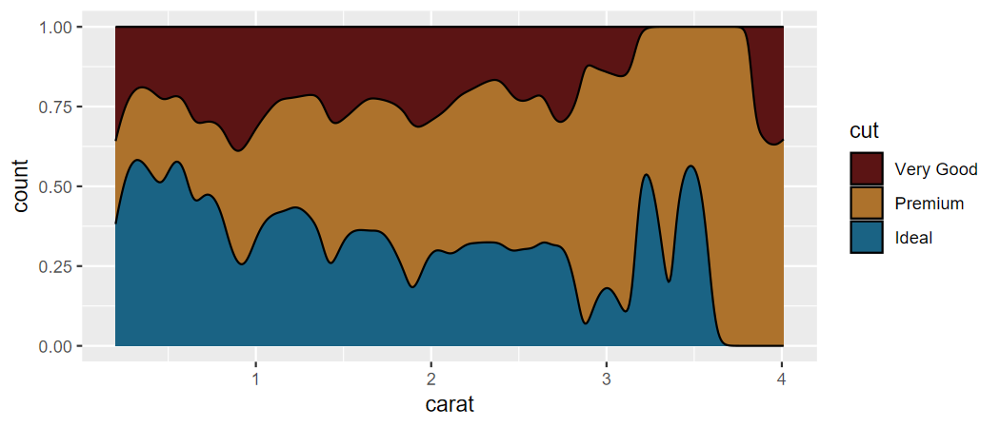
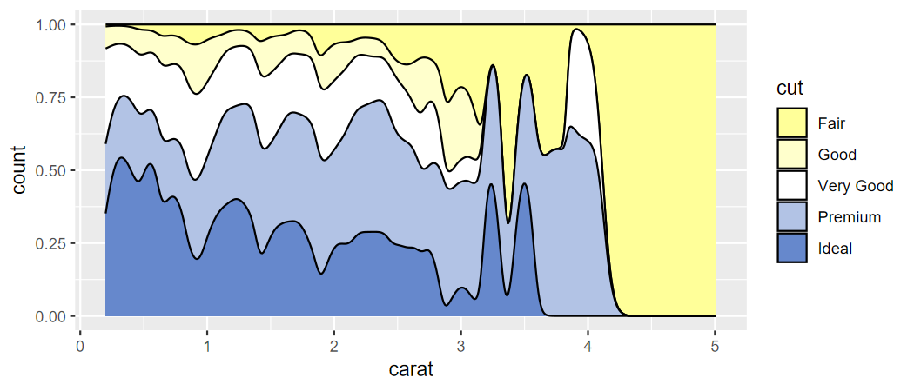

Author: Matthew Leonawicz
License: MIT


The trekcolors package provides a collection of color palettes based on Star Trek. It also offers functions for custom palettes and scale_* functions for use with ggplot2.
Examples
Basics
library(trekcolors)
library(ggplot2)
trek_pal("starfleet")
#> [1] "#5B1414" "#AD722C" "#1A6384"
trek_pal("lcars_2357")
#> [1] "#FFFF99" "#FFCC99" "#FFCC66" "#FF9933" "#664466" "#CC99CC" "#99CCFF"
#> [8] "#3366CC" "#006699"
lcars_pal("2357") # there are some special functions for LCARS colors
#> [1] "#FFFF99" "#FFCC99" "#FFCC66" "#FF9933" "#664466" "#CC99CC" "#99CCFF"
#> [8] "#3366CC" "#006699"Preview the starfleet and lcars_2357 palettes.

Scale functions for use with ggplot2
p <- ggplot(iris, aes(Sepal.Width, Sepal.Length, color = Species)) +
geom_point(size = 5, alpha = 0.75)
p + scale_color_trek() # starfleet is default palette
p <- ggplot(diamonds, aes(carat, price, color = clarity)) +
geom_point()
p + scale_color_lcars("2357") # equivalent to scale_color_trek("lcars_2357")
p <- ggplot(diamonds, aes(carat, stat(count), fill = cut)) +
geom_density(position = "fill")
p + scale_fill_trek("klingon")


p <- ggplot(diamonds, aes(carat, stat(count), fill = cut)) +
geom_density(position = "fill")
p + scale_fill_lcars("2357")

d <- diamonds[diamonds$cut >= "Very Good", ]
p <- ggplot(d, aes(carat, stat(count), fill = cut)) +
geom_density(position = "fill")
p + scale_fill_trek("starfleet")
Palettes with named colors
The four LCARS palettes that have a year in their series name are special in that these official standard LCARS colors have formal names.
# lcars_pals() # print list of all LCARS palettes
lcars_colors() # full set of unique names across the four palettes
#> pale-canary tanoi golden-tanoi neon-carrot
#> "#FFFF99" "#FFCC99" "#FFCC66" "#FF9933"
#> eggplant lilac anakiwa mariner
#> "#664466" "#CC99CC" "#99CCFF" "#3366CC"
#> bahama-blue blue-bell melrose hopbush
#> "#006699" "#9999CC" "#9999FF" "#CC6699"
#> chestnut-rose orange-peel atomic-tangerine danub
#> "#CC6666" "#FF9966" "#FF9900" "#6688CC"
#> indigo lavender-purple cosmic red-damask
#> "#4455BB" "#9977AA" "#774466" "#DD6644"
#> medium-carmine bourbon sandy-brown periwinkle
#> "#AA5533" "#BB6622" "#EE9955" "#CCDDFF"
#> dodger-pale dodger-soft near-blue navy-blue
#> "#5599FF" "#3366FF" "#0011EE" "#000088"
#> husk rust tamarillo
#> "#BBAA55" "#BB4411" "#882211"
lcars_2357() # specific color series; also 2369, 2375, 2379
#> pale-canary tanoi golden-tanoi neon-carrot eggplant
#> "#FFFF99" "#FFCC99" "#FFCC66" "#FF9933" "#664466"
#> lilac anakiwa mariner bahama-blue
#> "#CC99CC" "#99CCFF" "#3366CC" "#006699"
lcars_2357("lilac", "mariner") # select by name
#> lilac mariner
#> "#CC99CC" "#3366CC"Custom palettes
In addition to these and all the other predefined palettes, custom palettes can be constructed using official LCARS color names. This is like colorRampPalette but with the ability to recognize official LCARS color names. This functionality was leveraged by scale_color_lcars1 and scale_color_lcars2 seen above when making sequential or divergent palettes based on specific LCARS colors for use with ggplot.
lcars_custom_pal <- lcars_colors_pal(c("pale-canary", "eggplant"))
lcars_custom_pal(8)
#> [1] "#FFFF99" "#E9E491" "#D3C98A" "#BDAE83" "#A7947B" "#917974" "#7B5E6D"
#> [8] "#664466"
p <- ggplot(diamonds, aes(carat, stat(count), fill = cut)) +
geom_density(position = "fill")
p + scale_fill_lcars2("pale-canary", "danub")
# p + scale_fill_manual(values = lcars_custom_pal(8)) # equivalent
p + scale_fill_lcars2("pale-canary", "danub", divergent = TRUE)
All predefined palettes
# See available palette names
trek_pal()
#> [1] "andorian" "bajoran" "borg"
#> [4] "breen" "breen2" "dominion"
#> [7] "enara" "enara2" "ferengi"
#> [10] "gorn" "iconian" "klingon"
#> [13] "lcars_series" "lcars_2357" "lcars_2369"
#> [16] "lcars_2375" "lcars_2379" "lcars_alt"
#> [19] "lcars_first_contact" "lcars_nemesis" "lcars_nx01"
#> [22] "lcars_29c" "lcars_23c" "lcars_red_alert"
#> [25] "lcars_cardassian" "romulan" "romulan2"
#> [28] "starfleet" "starfleet2" "tholian"
#> [31] "terran" "ufp" "red_alert"
#> [34] "yellow_alert" "black_alert"
# view all predefined palettes
view_trek_pals()